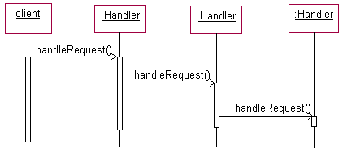
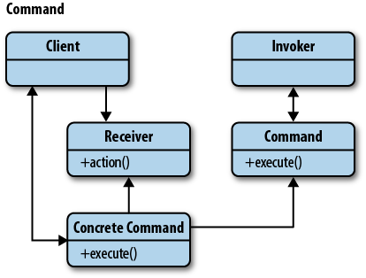

Promise / Deffered object
‘promises can mitigate the “Pyramid of Doom”: the situation where code marches to the right faster than it marches forward.’ ~Kristopher Michael Kowal
It might be very well that right now you are writing code like this:
step1(function (value1) {
step2(value1, function(value2) {
step3(value2, function(value3) {
step4(value3, function(value4) {
// Do something with value4
});
});
});
});Promises allow you to rewrite your code like so:
promisedStep1
.then(promisedStep2)
.then(promisedStep3)
.then(promisedStep4)
.then(function (value4) {
// Do something with value4
})
.catch(function (error) {
// Handle any error from all above steps
})
.done();In the code sample above promisedStep{N} is a version of step{N} which returns a promise.

Several specifications that define promises exist.
- Promises/A [http://wiki.commonjs.org/wiki/Promises/A]
- Promises/A+ [https://promisesaplus.com]
- Standard ECMA-262 6th Edition: Promise Objects [http://www.ecma-international.org/ecma-262/6.0/#sec-promise-objects]
Chain of responsibility
In object-oriented design, the chain-of-responsibility pattern is a design pattern consisting of a source of command objects and a series of processing objects. Each processing object contains logic that defines the types of command objects that it can handle; the rest are passed to the next processing object in the chain. A mechanism also exists for adding new processing objects to the end of this chain.
An example of a chain-of-responsibility is event-bubbling in which an event propagates through a series of nested controls one of which may choose to handle the event.
<!DOCTYPE HTML>
<html>
<body>
<link type="text/css" rel="stylesheet" href="example.css">
<div class="d1">1 <!-- the topmost -->
<div class="d2">2
<div class="d3">3 <!-- the innermost -->
</div>
</div>
</div>
</body>
</html>Benefits of the Chain of Responsibility Pattern
The chain of responsibility pattern allows you to dynamically choose which object handles a request. This means you can use conditions known only at run-time to assign tasks to the most appropriate object.
Command
The general idea behind the Command pattern is that it provides us a means to separate the responsibilities of issuing commands from anything executing commands, delegating this responsibility to different objects instead.
The Command pattern has four main parts that make it up.
- Command object
- Client
- Invoker
- Receiver
var CarManager = {
// request information
requestInfo: function( model, id ){
return "Info for " + model + " with ID " + id + " is f1";
},
// purchase the car
buyVehicle: function( model, id ){
return "You have purchased Item " + id + ", a " + model;
},
// arrange a viewing
arrangeViewing: function( model, id ){
return "Booked a view of " + model + " ( " + id + " ) ";
}
};
// We want to be able to do:
CarManager.execute( "buyVehicle", "Ford Escort", "453543" );
// We can achieve this with:
CarManager.execute = function ( name ) {
return CarManager[name] &&
CarManager[name].apply(
CarManager,
[].slice.call(arguments, 1)
);
};